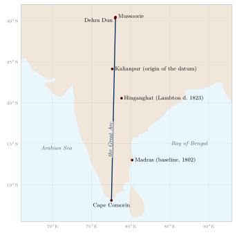

Chapter 14: Surveying the Subcontinent: Colonial Mapping and Its Legacy¶
Between the 1760s and the 1880s the East India Company and then the British Crown carried out a series of surveys that produced, for the first time, a map of the whole subcontinent based on measurement. The Survey of India, which traces its origin to 1767, is still the national mapping agency. The story of these surveys has often been told as a heroic tale of European science. Recent historians have told it differently: as the making of an empire on paper, in which maps helped to define and control territory, and as a joint enterprise in which Indian assistants, informants, computers and explorers played essential roles that were long left out of the record (Edney 1997; Raj 2007). This chapter follows that history and then considers the place of the older traditions in modern India.
14.1 James Rennell and the First Maps of British India¶
James Rennell (1742–1830) was appointed Surveyor General of Bengal in 1767, the date from which the Survey of India counts its history. He surveyed the rivers and districts of Bengal and Bihar by compass traverse and measured distances, and published a Bengal Atlas (1779–81). He then compiled a Map of Hindoostan (1782) with an accompanying Memoir (1783, enlarged in later editions), which brought together everything he could find: his own surveys, the route surveys of army officers, astronomical observations of latitude and longitude, earlier European maps, and Indian sources, including the Āʾīn-i Akbarī’s lists of provinces and distances and itineraries supplied by Indian informants (Rennell 1783).
Rennell’s map was a compilation, not a survey: its accuracy varied greatly from region to region, and large areas were filled with information from itineraries. Kapil Raj has argued that it should be seen as the product of an encounter in which Indian knowledge of routes and places, provided by munshīs, guides and local officials, was essential, and in which the categories of the Mughal revenue administration shaped the map of British territory (Raj 2007).
14.2 Colin Mackenzie and the Mysore Survey¶
After the defeat of Tipu Sultan in 1799, Colin Mackenzie (1754–1821) conducted a survey of the former Mysore territories that combined triangulation and topographical mapping with the collection of statistical, historical and ethnographic information. Assisted by a team of Indian scholars, notably the Brahmin brothers Kavali Venkata Borayya and Lakshmayya, he collected thousands of manuscripts, inscriptions, local histories and plans, now known as the Mackenzie Collection. In 1815 he became the first Surveyor General of India. His work shows how closely surveying was tied to the gathering of knowledge about Indian history and society for the purposes of government (Edney 1997).
14.3 The Great Trigonometrical Survey¶
14.3.1 Lambton¶
In 1802 William Lambton (c. 1753–1823), an infantry officer with a training in mathematics, measured a baseline near Madras and began a triangulation of southern India. His aim was not only to map the territory but to measure the length of a degree of the meridian at Indian latitudes and so contribute to knowledge of the shape of the earth. From a series of triangles running north from Cape Comorin along a meridian close to 78° E, he and his successors built the “Great Arc” (Figure 14.1). Distances were derived from measured baselines and angles taken with great theodolites, the largest weighing about half a tonne. From 1818 the work was known as the Great Trigonometrical Survey. Lambton died in the field at Hinganghat in central India in 1823 (Keay 2000).
14.3.2 Everest¶
George Everest (1790–1866) took charge of the survey in 1823 and became Surveyor General in 1830. He introduced improved instruments and methods, re-measured baselines, and carried the Great Arc north to the foothills of the Himālaya near Dehra Dun, completing it in the early 1840s. The arc, some 2,400 km long, was the longest meridian arc measured up to that time and a major contribution to geodesy. Everest also planned a grid of further chains of triangles across northern India.

14.3.3 Radhanath Sikdar and the Height of Peak XV¶
The calculations of the survey were carried out by a staff of “computers”, many of them Indian. Radhanath Sikdar (1813–1870), a Bengali mathematician trained at the Hindu College in Calcutta, joined the survey in 1831, became chief computer, and later headed the meteorological work of the survey in Calcutta. In the early 1850s the computing office reduced observations of the Himalayan peaks taken from the plains and found that Peak XV was the highest yet measured; tradition credits Sikdar with the calculation. In 1856 the Surveyor General Andrew Waugh announced its height as 29,002 feet and proposed naming it after his predecessor, George Everest, against the survey’s own rule of using local names. The mountain is known in Tibetan as Chomolungma and was given the Nepali name Sagarmāthā in the twentieth century (Keay 2000).
14.3.4 Measuring the Himālaya¶
Before the survey reached the Himālaya, it was widely believed in Europe that the Andes contained the world’s highest mountains. Observations of the Himalayan peaks from the plains in the early nineteenth century showed that several were higher; for some decades Dhaulagiri and then Kangchenjunga were thought the highest, until the calculations for Peak XV were completed in the 1850s. Because Nepal and Tibet were closed to British surveyors, the heights were computed from observations taken from stations in India more than a hundred kilometres away, with corrections for the curvature of the earth and for atmospheric refraction—a difficult problem that later surveys refined. The figure of 29,002 feet announced in 1856 was close to later values; the height now generally accepted is 8,848.86 m, announced jointly by Nepal and China in 2020.
14.3.5 The Survey’s Indian Staff¶
The work of the Great Trigonometrical Survey depended on large numbers of Indian employees whose names are rarely recorded: the khalāsīs who carried the instruments and erected the signal towers, the flag-men and lamp-men who stood on distant hills at night so that their lights could be observed, the clerks and draughtsmen, the computers who reduced the observations, and the sub-assistants who carried out much of the topographical surveying. The building of towers on the flat plains of northern India, the clearing of lines of sight through forests, and the measurement of baselines with chains laid end to end required thousands of labourers. Recent historians have emphasised that the Survey was an Indian as well as a British enterprise, though its credit and its purposes were overwhelmingly British (Edney 1997; Raj 2007).
The Great Trigonometrical Survey: Key Dates
-
1767: Rennell appointed Surveyor General of Bengal.
-
1802: Lambton measures his first baseline near Madras.
-
1815: Colin Mackenzie becomes first Surveyor General of India.
-
1818: the name “Great Trigonometrical Survey” is adopted.
-
1823: death of Lambton; Everest takes charge.
-
1830–43: Everest Surveyor General; the Great Arc completed in the early 1840s.
-
1856: height of Peak XV (Everest) announced.
-
1878: the trigonometrical, topographical and revenue surveys united in the Survey of India.
14.4 The Pundits: Indian Explorers of Tibet and Central Asia¶
British officers could not travel openly in Tibet, Central Asia or much of the Himalayan borderland in the mid-nineteenth century. From 1863 Thomas Montgomerie of the Great Trigonometrical Survey trained Indian men from the Himalayan borderlands to travel in disguise as pilgrims or traders and to record routes, distances, altitudes and positions. They were known in the survey’s reports by code names and initials and collectively as the “pundits” (Waller 1990).
14.4.1 Methods¶
The pundits were trained to walk at a fixed pace and to count their steps, using a Buddhist rosary of 100 beads instead of the usual 108, slipping one bead for every hundred paces. Notes were hidden in prayer wheels; compasses and thermometers were concealed in walking staffs and luggage. Latitude was found with a sextant at night, and altitude by measuring the boiling point of water with a thermometer, since water boils at lower temperatures at greater heights. The data were reduced by the survey’s computers in Dehra Dun.
14.4.2 Nain Singh and His Successors¶
-
Nain Singh Rawat (1830–1882), a schoolteacher from Milam in Kumaon, travelled in 1865–66 from Kathmandu to Lhasa, fixing its position, and returned along the upper Tsangpo and past Mānasarovar; in 1867 he visited the gold fields of Thok Jalung in western Tibet; and in 1874–75 he travelled from Leh across the Tibetan plateau to Lhasa and down to Assam. He received the Patron’s Medal of the Royal Geographical Society in 1877.
-
Kishen Singh (“A-K”), his cousin, made a four-year journey (1878–82) from Lhasa to the north-east of the Tibetan plateau and back through western China.
-
Kinthup (“K-P”), a tailor from Sikkim, spent four years (1880–84) on a mission to test whether the Tsangpo was the Brahmaputra, including releasing marked logs into the river; his report was at first disbelieved and later largely vindicated.
-
Sarat Chandra Das (1849–1917), a Bengali scholar, travelled to Shigatse and Lhasa in 1879 and 1881–82, collected Tibetan texts, and later compiled a Tibetan–English dictionary.
The pundits’ journeys were dangerous and poorly rewarded, and several of them were not properly recognised in their lifetimes. Their work depended on their knowledge of languages, of Buddhist and Hindu pilgrimage practice, and of the trade routes of the Himalaya—exactly the kinds of knowledge described in earlier chapters. Their reports also served the strategic interests of British India in the “Great Game” with Russia, which is why the survey paid for them.
14.5 Gazetteers, Censuses and Surveys of People¶
Maps were only one part of the colonial effort to describe India. District gazetteers, compiled from the 1860s, described the physical geography, history, population, agriculture, castes, religions and antiquities of each district. W. W. Hunter’s Imperial Gazetteer of India (first edition 1881; the expanded edition of 1907–09 runs to twenty-six volumes, including an atlas) summarised them for the whole of British India. The census, taken in parts of India from the 1860s and on a synchronous all-India basis from 1881, counted people by place, religion, caste and occupation. George Grierson’s Linguistic Survey of India (1894–1928) mapped the languages and dialects of most of British India.
These projects produced an enormous body of geographical information, much of it still used. They also shaped the categories through which India was understood and governed: the census in particular fixed and ranked caste categories in ways that had lasting social and political effects. Like the maps of the surveyors, they were made with the help of many Indian clerks, informants and scholars, and they reflected the interests of the state that commissioned them.
14.5.1 Statistical Surveys of Districts¶
The gazetteers had precursors in the statistical surveys of the early Company period. Francis Buchanan (later Buchanan-Hamilton) travelled through Mysore, Canara and Malabar in 1800–01, after the fall of Tipu Sultan, with instructions to report on agriculture, crafts, commerce, the condition of the people and their religions; his account was published in three volumes in 1807. Between 1807 and 1814 he carried out a survey of the districts of Bihar and northern Bengal, recording the land and its uses, the crops and manufactures, the castes and their occupations, and the antiquities and natural history of each district. Much of it was published only in an edited and abridged form by Montgomery Martin in 1838, and the manuscript reports remain an important source for the social and economic geography of eastern India on the eve of colonial change.
W. W. Hunter, who became the first Director General of Statistics to the Government of India, standardised the form in the 1870s. His Statistical Account of Bengal (twenty volumes, 1875–77) treated each district under a fixed set of headings—physical aspects, population, agriculture, natural calamities, commerce, administration, health—and became the model for the district gazetteers of other provinces and for the Imperial Gazetteer. The uniformity was the point: every district of India could be described, compared and tabulated in the same terms. The method also had its blind spots. The headings came from the needs of revenue and administration, local knowledge entered only as the officials recorded it, and Adivasi and pastoral peoples who did not fit the categories of settled agriculture were described mainly as problems of order.
14.5.2 The Census as a Map of Society¶
Provincial counts were made in the 1860s, and a census of most of British India was taken between 1867 and 1872, though not on a single date. The census of 1881 was the first taken simultaneously across British India and most of the princely states, and a census has been held every ten years since. The census was geographical in a double sense. It divided the whole country into enumeration blocks, villages, towns, districts and provinces, so that every person was counted in a place; and it produced, decade by decade, tables and maps of the distribution of population, language, religion, caste and occupation that were the raw material for the regional geography of India.
Its categories were contested from the start. The census of 1901, under Herbert Risley, attempted to rank castes in each province by “social precedence”. Caste associations responded with petitions claiming higher places and new names, and the census itself became an arena in which communities sought recognition (Cohn 1987; Dirks 2001). Caste was last enumerated in full in 1931, although in 2025 the government decided to include it again in the next census. The censuses of independent India, beginning in 1951, recorded only the Scheduled Castes and Scheduled Tribes among the castes and communities, while expanding the geographical apparatus: district census handbooks with village directories and maps, and census atlases. The language returns of the census, building on Grierson’s survey, supplied the data on which the linguistic states were drawn (Chapter 12).
14.6 Maps, Territory and the Nation¶
Matthew Edney has argued that the surveys did not simply record a pre-existing India; they helped to create “British India” as a single bounded and measurable territory, an idea that the colonial state then administered and that nationalists inherited (Edney 1997). Ian Barrow has shown how British maps also told a history, presenting the growth of Company territory as the natural progress of an orderly state (Barrow 2003), and Manu Goswami how railways, statistics and maps together produced the idea of India as a single national economy and space by the late nineteenth century (Goswami 2004). The outline map of India became a familiar image in schoolrooms and newspapers.
Nationalist imagination gave the map a sacred meaning. Bankimchandra Chattopadhyay’s song Vande Mātaram (composed in the 1870s and published in his novel Ānandamaṭh in 1882) addresses the land as a mother, “well-watered, fruitful, cool with the breezes from the Malaya hills, dark with crops”. In the early twentieth century, painters and printmakers depicted Bhārat Mātā (Mother India) as a goddess whose body filled or stood upon the outline of the map. Sumathi Ramaswamy has studied how these images combined the cartographic outline produced by colonial surveying with the older language of the sacred land (Ramaswamy 2010). The images were powerful but not neutral: some Muslims and others objected to the identification of the nation with a Hindu goddess, and the debate over Vande Mātaram was part of the politics of the independence movement.
14.7 Mapping in Independent India¶
After 1947 the Survey of India continued as the national mapping agency. A National Atlas Organisation, founded in 1956 and later renamed the National Atlas and Thematic Mapping Organisation (NATMO), produced national and thematic atlases. The Indian Space Research Organisation (ISRO), founded in 1969, built a remote-sensing programme beginning with the experimental Bhaskara satellites (1979 and 1981) and the IRS series (from 1988), and later the Cartosat mapping satellites (from 2005). Satellite data are now used for land use, agriculture, forests, water resources, flood and disaster mapping, urban planning and archaeology. India’s regional satellite navigation system (NavIC) and online geoportals make geographical information widely available.
Remote sensing has also been applied to historical questions, such as the mapping of palaeochannels in the Ghaggar–Hakra basin (Chapter 9) and the detection of archaeological sites. These are valuable tools; their results, like all evidence, need careful interpretation, and they cannot by themselves confirm or refute the descriptions of ancient texts.
14.7.1 Maps and the State after 1947¶
For several decades after independence, large-scale topographical maps of India were treated as restricted documents for reasons of security, particularly in border and coastal areas, and the depiction of India’s external boundaries on maps has remained a matter of law and diplomacy. A National Map Policy in 2005 created separate series of defence and open maps, and guidelines issued in 2021 liberalised the acquisition and use of most geospatial data by Indian companies and individuals. The history of mapping in independent India thus continues to show the close connection between geographical knowledge and the power of the state that the colonial surveys revealed.
14.8 The Recovery of Historical Geography¶
The study of India’s ancient geography as a discipline began in the nineteenth century. Alexander Cunningham, founder of the Archaeological Survey of India (1861), used Xuanzang’s itinerary and the Greek sources to identify ancient sites and published The Ancient Geography of India (1871) (Cunningham 1871). Nundo Lal Dey’s Geographical Dictionary of Ancient and Mediaeval India (1899; second edition 1927) gathered the identifications of thousands of place-names from Sanskrit, Pali and other sources (Dey 1927). Śaṅkara Bālakṛṣṇa Dīkṣita’s history of Indian astronomy, written in Marathi (1896), included a detailed account of the astronomers’ geography (Dikshit 1969). In the twentieth century, scholars such as Bimala Churn Law, D. C. Sircar and V. S. Agrawala used Pali, Sanskrit and epigraphic sources to reconstruct the regions, peoples and places of early India (Law 1954; Sircar 1971; Agrawala 1953).
This scholarship is the foundation on which modern accounts, including this volume, rest. Its methods—the careful comparison of texts, inscriptions, coins, archaeological sites and travellers’ accounts—remain the right ones for a subject in which wishful identification is a constant temptation.
14.9 Geography as a Modern Discipline¶
Geography entered the Indian classroom through the colonial school curriculum, largely as the memorising of capes, rivers and provincial capitals, and only slowly became a university discipline. Geographical societies with their own journals were founded at Madras and Calcutta between the wars, teachers of geography were trained, and university departments were established from the 1930s and 1940s at Aligarh, Calcutta, Madras, Banaras and elsewhere; they multiplied after independence.
Three strands shaped the new discipline. The first was regional geography in the manner of Spate’s India and Pakistan: the division of the subcontinent into natural and cultural regions, each described physically and historically (Section 12.1). Its fullest expression by Indian geographers is the collective India: A Regional Geography, edited by R. L. Singh at Banaras (Singh 1971). The second was the atlas. S. P. Chatterjee of Calcutta, the first director of the National Atlas Organisation founded in 1956, made the national atlas and its thematic sheets a central project of Indian geography, and the census added its own atlases and village maps. In 1968, while Chatterjee was president of the International Geographical Union, the International Geographical Congress met in New Delhi. The third strand, from the 1970s, was the study of planning, regional development and inequality, associated above all with Moonis Raza and the Centre for the Study of Regional Development at Jawaharlal Nehru University, which brought geography close to economics and history and to the question of who benefits from development.
The new discipline had little to say about the traditions described in the earlier chapters of this volume. The Purāṇic and Siddhāntic material was left to Sanskritists and historians of science, the Persian gazetteers to historians of the Mughal empire, and the knowledge of pilgrims, sailors and herders to anthropologists. Bringing these together, as this volume tries to do, is a recent undertaking, helped by the history of cartography and by the inclusion of Indian knowledge systems in the curriculum (Section 14.13).
14.10 Exploration in Independent India¶
Independent India has continued the tradition of exploration in new forms. Indian mountaineers took part in the exploration and ascent of the Himalayan peaks; Tenzing Norgay, who with Edmund Hillary made the first ascent of Everest in 1953, had made his home in Darjeeling, and Indian expeditions climbed the mountain from 1965. Since 1981 India has sent scientific expeditions to Antarctica and has maintained research stations there—Dakshin Gangotri (1983), Maitri (1989) and Bharati (2012)—as well as a station in the Arctic, at Ny-Ålesund in Svalbard. The National Institute of Oceanography and other bodies survey the seas around India, and satellites map the land from space (see above). These enterprises belong to a modern, international science; they continue, in very different circumstances, the long history of Indians travelling to the edges of the known world and bringing back knowledge of it.
14.11 The Legacy of the Older Traditions¶
What remains of the geographical traditions described in this volume?
-
Mathematical geography: the Siddhānta tradition lives on in the traditional almanacs (pañcāṅga), still calculated for local latitudes and longitudes and still, in many cases, reckoned from the meridian of Ujjain. Its history is an important part of the history of science (Plofker 2009).
-
Sacred geography: pilgrimage has grown enormously with railways, roads and air travel, and the sacred places described in the Purāṇas and māhātmyas are visited by more people than ever (Eck 2012).
-
Names: Purāṇic and classical names for the land and its features—Bhārata, Himālaya, Gaṅgā, Narmadā, Malaya, Sahyādri—remain in use.
-
Local knowledge: the practical knowledge of farmers, herders, fishers and forest peoples is increasingly studied for its relevance to the management of water, forests and coasts.
14.11.1 Sacred Groves and Tanks¶
Two institutions are often cited as examples of traditional conservation. Sacred groves—patches of forest dedicated to a deity and protected by custom, called devrāī in Maharashtra, kāvu in Kerala, devarakāḍu in Karnataka, oraṇ in Rajasthan and sarnā among Adivasi communities of central India—have been shown to preserve remnants of native forest and rare species. Madhav Gadgil and V. D. Vartak’s study of the sacred groves of the Western Ghats (1976) began their scientific study (Gadgil and Vartak 1976). Village tank systems in South India, described in Chapter 9, stored water and recharged groundwater for centuries.
Both institutions are valuable, but they should not be romanticised. Many sacred groves have shrunk or been converted to temple compounds; tank systems depended on collective labour often organised along lines of caste, and many decayed under colonial and post-colonial administration. Where tanks have been revived in recent decades, the question of who controls the water has proved as important as the engineering.
14.12 The Politics of Names¶
Place-names are part of geography, and in modern India they have been a subject of politics. After independence, many colonial spellings were replaced by forms closer to local pronunciation, and states were reorganised on linguistic lines from 1956. Several major cities have been officially renamed: Bombay as Mumbai (1995), Madras as Chennai (1996), Calcutta as Kolkata (2001), Bangalore as Bengaluru (2014) and Allahabad as Prayagraj (2018). Some renamings restored names already in local use; others revived older or sacred names. They show how the language of geography continues to express ideas about history and identity, as the names Bhārata and Hindustan did in earlier centuries (Chapter 1).
14.13 Geography and Indian Knowledge Systems in Education¶
The National Education Policy of 2020 recommends that Indian knowledge systems be integrated into school and university curricula. For geography, the material of this volume offers much that is worth teaching: the Vedic and Tamil descriptions of landscapes; the cosmologies of the Purāṇas, Jains and Buddhists as examples of how cultures imagine the world; the mathematical geography of the Siddhāntas and its place in the history of science; the sacred geography of pilgrimage; maps, routes and travel accounts as historical sources; and the knowledge of local communities. Taught honestly—with dates, sources and evidence, with the limits of each tradition acknowledged, and without claims that ancient texts anticipated modern discoveries—it can give students a richer understanding both of India and of geography as a human enterprise.
14.14 Conclusion¶
The geographical traditions of India are many, not one. The Vedic hymns named rivers and praised the earth. The Purāṇas, and the Jain and Buddhist texts, built cosmologies in which the known land had its place at the centre of an immense and ordered universe. The astronomers worked with a spherical earth, estimated its size in their own units, and computed latitudes and time differences. Pilgrims, merchants, sailors and herders accumulated a vast practical knowledge of routes, seasons and places, much of it never written down. Mughal administrators described the empire’s provinces in detail; Jain artists painted the cosmos; Rajput and Maratha courts drew plans of cities and forts. Foreign travellers recorded what they saw, and Indian travellers began to describe the world beyond. Finally, colonial surveyors, with Indian colleagues whose role was long obscured, measured the subcontinent trigonometrically.
These traditions should be studied with respect and with care: neither dismissed as the “absence of geography” nor inflated into claims that ancient texts anticipated modern science. Read in their own terms, they reveal a long and varied engagement with the land, its waters and the wider world, which is one of the richest chapters in the history of geographical thought.
Further Reading¶
Edney (1997) and Raj (2007) on colonial surveying; Keay (2000) on the Great Trigonometrical Survey; Waller (1990) on the pundits; Ramaswamy (2010) on maps and the nation; Cohn (1987) and Dirks (2001) on the census and caste; Gadgil and Vartak (1976) on sacred groves.